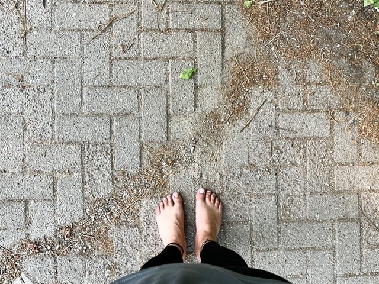
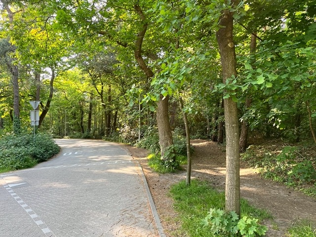

Training session in Zeisterbos
Posted on
2 kilometres today, first 1.1 kilometre is without any break, the rest is with walking breaks. A very small improvement. Probably not enough for Amersfoort 5k route on 11 June. But who cares, I’m in it for the joy of running barefoot 👣
 